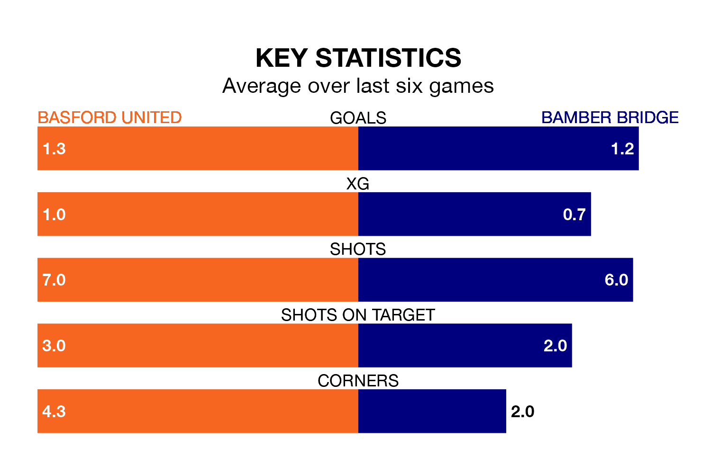

Bamber Bridge come to Greenwich Avenue to play Basford United on Saturday in poor form, having collected just three points from their last six games.
The visitors have won just one of their last six fixtures, while Basford have two wins and a draw.
In the last 10 years, Basford and Bamber Bridge have played each other on eight occasions. Basford won five of them and Bamber Bridge three.
On average, Basford scored 1.9 goals and Bamber Bridge 1.1 in those matches.
Their last meeting was on November 11, when Bamber Bridge won 5-2 at home.
Basford are 18th in the table after 40 games, of which they have won eight and drawn 10, earning 34 points.
Bamber Bridge are two places ahead of United in 16th, with 10 wins and 11 draws putting them on 41 points.
With 40 goals in 40 games so far this season, the hosts are the league's third-lowest scorers with 1.0 goals per game. And they are conceding at an average rate, letting in 66 goals at a rate of 1.6 per game.
The away team, meanwhile, are average scorers, with 1.6 goals per game. They have conceded 2.0 goals per game.
Basford's last match was on April 20, a 1-1 draw against Radcliffe Borough.
Bamber Bridge beat Whitby Town 3-2 last time out, also on April 20.
Updated: 07:59 (UTC), 26/04/24